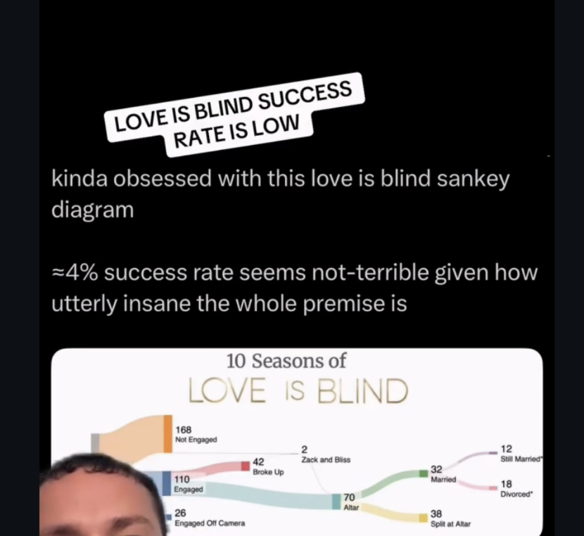
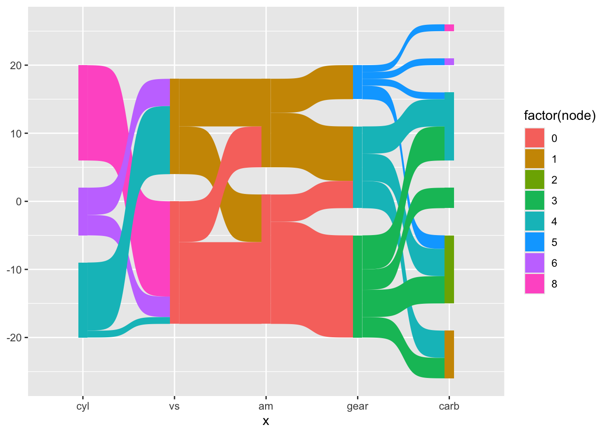
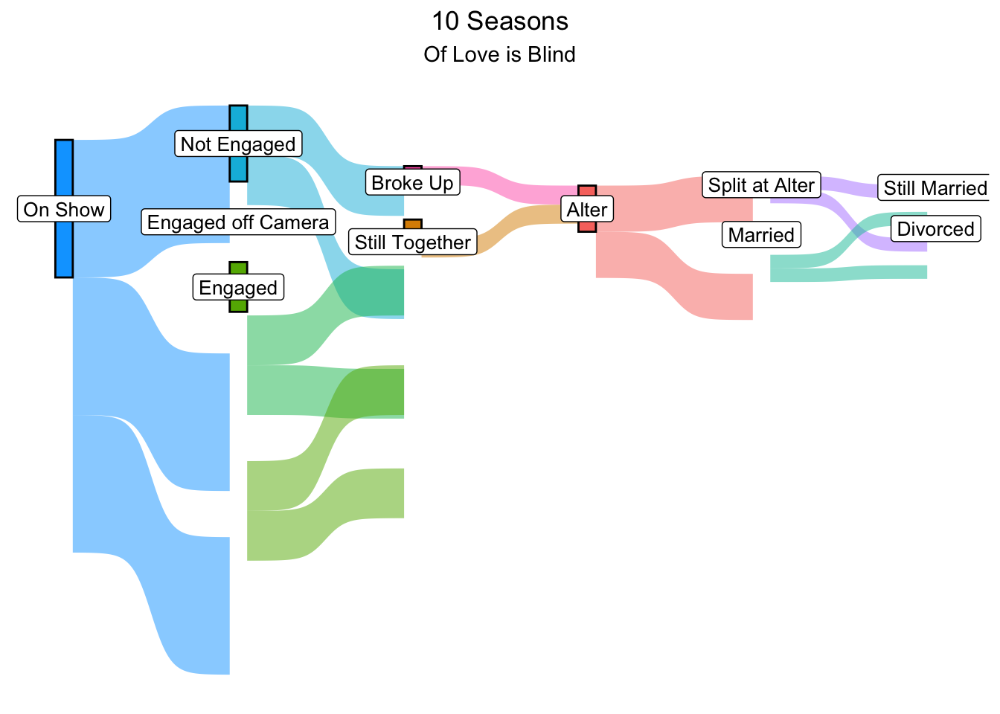

A cool plot popped up on my instagram feed and it reminded me of “Napoleon’s March”. The twist is, its a chart about love is blind and relationship survival.

I’ve decided to try to recreate it!
On this journey, I found myself on reddit and ended up coming across this website: https://islovereallyblind.com/trends and this is going to be a reference for constructing some data.
I am feeling less insecure now about making a portfolio piece. Clearly I am not the #1 superfan.
To get me started on doing sankey diagrams with ggplot, I used this tutorial: https://r-charts.com/flow/sankey-diagram-ggplot2/ and the info in the development github repo https://github.com/davidsjoberg/ggsankey which was very helpful for figuring out how to set up the data.
I ran their example so that I could see what the data frame should look like.

| x | node | next_x | next_node |
|---|---|---|---|
| cyl | 6 | vs | 0 |
| vs | 0 | am | 1 |
| am | 1 | gear | 4 |
| gear | 4 | carb | 4 |
| carb | 4 | NA | NA |
| cyl | 6 | vs | 0 |
Based on this diagram and their df versus what I want, I now know the following:
x is going to be the relationship outcome - e.g. engaged, split before alter, split at alter, etc
the node is the frequency - e.g. for x=engaged, node = 110 - actually this is not right
the next x is just the value of x that follows the previous x, for example, if x=alter, then next x is split at alter and married. I need to think more about how to ensure that it stacks
next node just refers to the frequency of the next x. If x = alter and node = 70, then next_x=married and next node = 32.
for dead ends, such as broke up, the next_x and next node get NAs
With this in mind, I start constructing a data frame. I am just going to try to create a series of vectors and then slap them together. My starting number is 304 singles.
First attempt at schemeing:
| x | node | next_x | next_node |
|---|---|---|---|
| Appeared on the show | 0 | Not engaged | 1 |
| Appeared on the show | 0 | Engaged | 1 |
| Appeared on the show | 0 | Engaged off Camera | 1 |
| Not Engaged | 1 | NA | NA |
| Engaged | 1 | Broke Up | 2 |
| Engaged | 1 | Still Together | 3 |
| Engaged off Camera | 1 | NA | NA |
| Broke Up | 2 | Alter | 3 |
| Still Together | 2 | NA | NA |
| Alter | 3 | Married | 4 |
| Alter | 3 | Split at Alter | 4 |
| Married | 4 | Still Married | 5 |
| Married | 4 | Divorced | 5 |
| Split at Alter | 4 | NA | NA |
| Still Married | 5 | NA | NA |
| Divorced | 5 | NA | NA |
It took an embarrassingly long time to figure this out and fix the logic gaps to geom_sankey would be happy. Here is the final df:
| x | node | next_x | next_node | n |
|---|---|---|---|---|
| On Show | 0 | Not Engaged | 1 | 168 |
| On Show | 0 | Engaged | 1 | 110 |
| On Show | 0 | Engaged off Camera | 1 | 26 |
| Not Engaged | 1 | NA | NA | 168 |
| Engaged off Camera | 1 | NA | NA | 26 |
| Engaged | 1 | Broke Up | 2 | 42 |
| Engaged | 1 | Still Together | 2 | 68 |
| Broke Up | 2 | NA | NA | 70 |
| Still Together | 2 | Alter | 3 | 42 |
| Alter | 3 | Married | 4 | 70 |
| Alter | 3 | Split at Alter | 4 | 32 |
| Split at Alter | 4 | NA | NA | 38 |
| Married | 4 | Still Married | 5 | 12 |
| Married | 4 | Divorced | 5 | 18 |
| Still Married | 5 | NA | NA | 12 |
| Divorced | 5 | NA | NA | 18 |

This was actually so difficult and it took me forever. I don’t know if part of the problem was that I manually set the dataframe up myself, rather than using the make_long() function or what, but I’ve now sunk a few hours into this. Sankey charts just aren’t my thing. I will stick to pedigrees and relatedness matrices.